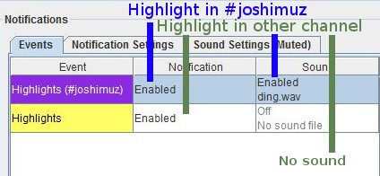

Main | Look | Chat Colors | Message Colors | Usercolors | Badges | Emoticons | Fonts | Chat | Messages | Moderation | Names | Highlight | Ignore | Log to file | Window | Tabs | Notifications | Sounds | Other | Commands | Advanced | TAB Completion | History | Stream Highlights | Hotkeys
This page details some of the settings in the Settings Dialog
(Main Menu - Settings). Also try hovering over settings
in the settings dialog itself, sometimes you can get a tooltip with some
additional information. You can open this help in the settings dialog by
clicking on the "Help" link on the bottom left.
You can select what will happen when you start Chatty:
The Look&Feel changes the overall look of the program. The "System" Look&Feel depends on the system you are on, the others are cross-platform. Some Look&Feels also allow you to additionally select a different font size, which affects most of Chatty.
Customize colors of certain types of chat messages. For the general look of the program you can choose another Look&Feel from the "Look" settings page.
You can customize the foreground and background color of messages based on the same message matching rules and patterns that are used for the Highlight system (not all prefixes apply). Add a new item, enter what messages you want to match and select the color you want them to have.
The order of entries can matter, the first color from the top that matches is used.
Note: The default colors are set on the "Colors" settings page.
Note: This feature only changes the message color. Use the Highlight system instead if you want to highlight important messages, have them added to a separate Highlighted Messages window and maybe show a notification or play a sound for it at the same time.
Examples of how to match certain messages, so you can assign it a custom color.
status:rbotNames setting).cat:vipvip Addressbook
category.chan:#tailsgaming start:!points#tailsgaming, starting
with !points.re*:(?i)(?<!practice |debug )\bROM\b(?! hack)ROM, not
preceded by practice or debug , nor
followed by hack (case-insensitive).This allows you to specify your own usercolors for either certain types of users (mod, subscriber etc.) or specific usernames. There are special items that you can use to specify that (to specify a username, just enter it without anything else):
$mod - Moderators$sub - Subscribers$turbo - Turbo Users$admin - Admins$staff - Staff members$globalmod - Global Moderators$anymod - All Admins, Broadcasters, Global Moderators, Moderators and Staff members$all - All users, this can be used to specify a default
color (should be put at the very end of the list)$broadcaster - Broadcasters$cat:<category> - A category from the Addressbook#<color code> - A Html color code, e.g. #0000FF for blue, which can
be used to replace colors$color:<color code or name> - A Html color code or name (names
as hardcoded into Chatty, may be different from other programs), e.g. $color:Blue for blue,
which can be used to replace colors$defaultColor - Users that don't have a color set and have the default assigned color (somewhat random)The order of the
entries in the table matters, because it is checked from the top. If you
were to put the $all item at the very top, any items below
wouldn't do anything, because the first item would already match all users.
This e.g. allows you to specify what color a user should have when he is
both a subscriber and a moderator (by either putting $mod
or $sub first).
If an item is red and has "(error)" appended (e.g. "$color.Blue (error)"), this means the item is invalid. In the example this is because a point has been used instead of a colon, so "$color:Blue" would be correct. This can also happen if it doesn't recognize the given color or the item is just in an invalid format.
botNames
setting, the BTTV API and the FFZ API. (See also: Setting Commands)Add entries to the table to show additional icons (Addon-Type)
or replace the default icons (all other Types).
The order of the entries can matter, they are looked at from the top:
Addon icons that match are shown, unless you use
the $stop restriction (see section Restriction
below).Addon will add an additional badge. All
Addon-badges that matche the Restrictions are shown at once.Turbo allows you to define a
custom icon for all Turbo badges shown in chat. Accordingly, if you
selected Bits it would target all variations of the
Bits badge.Other (Twitch) allows you to directly target a
Twitch Badge by it's Badge ID/Version, which allows you to replace
badges that are not an originally supported Type.Other
types selected. This specifies the Badge ID/Version that Twitch uses
to identify Badges, which allows you to target any Twitch Badge you
want, including a specific variation.bits/100. If you don't specify a Version, so
just bits, then it matches all versions, in this case
it would match all Bits Badges.serenity) or an
addressbook category (e.g. $cat:vip, which would refer to
the category vip). If you keep this empty, then no restriction
is applied.Addon carries an
implicit restriction, since e.g. the default moderator icons are only
displayed if the user is a moderator.$stop means if this icon matches (and is thus used),
it stops searching for further Addon icons. So
it's not really a restriction for this icon, but
rather a restriction that affects the following icons and
can be used to limit the number of Addon icons.$first puts this Addon icon before
the regular icons. The $stop restriction only
applies to one group of Addon icons separately
(before or after the regular icons).$badge:<ID/Version> matches a Twitch
Badge a user has. For example $badge:bits/100
will only target users that currently have the 100-Bits
Badge. This it not to be confused with replacing the Bits
Badge, this merely checks if the user has it.$cat:streamer $first - Matches users
in the Addressbook category streamer and puts the badge
in front of the default ones.lotsofs - Matches a user by the name
lotsofs.$cat:vip $badge:bits - Matches users
in the Addresbook category vip, but only if they also
have a Bits-Badge displayed.!#channel) to have it
displayed in all channels except the one you specified.$start - Add before all other badges$mod - Add after mod badge (including broadcaster etc.)$sub - Add after sub badge$bot - Add after bot badge$end - Add after all other badges (same as leaving this field empty)$other - Add after 'Other' badges (e.g. FFZ Supporter badge)$other:<id> - Add after 'Other' badge with the specified badge id/version<id> - Add after Twitch badge with the specified badge id/version.png and is recommended to
be about 18x18 pixels (because that is the default size). If you
specify no image, then the matching default icon is removed.<working_directory>/img/
(Chatty directories help).
You can click on Image Folder to show information about
it and rescan to update the list.$default will use
the default image file, that would be shown without defining
Custom Badges. This can be useful if you e.g. want to replace all
Badge Types, except for one, so you can define that one to use the
default.http is interpreted as
URL.Tip: Jump to entries in the table by clicking into a column and start to type. Backspace or wait to get out of the search mode.
None to turn off Emoji
images altogether.:joy: or :mouse: get
replaced with their respective Emoji character (and thus image, if
a Set is chosen) when entering them into the inputbox.Emotes added to this list will not be turned into an image, but instead are just shown as their emote code.
The code added to the list has to be the
exact code used internally to find the emote in the messages. Usually this is simply
the emote code as you would type it in chat, but some emotes have a special syntax
that you might not even know (e.g. :) has \:-?\) as actual code).
It is recommended to use the emote context menu (right-click on an emote in chat) to
ignore emotes, because then the correct code will automatically be added to
the list.
Change font and font size by clicking on Select font.
Input font is restricted to two fonts by default, because other fonts cause issues due to a bug in Java. The number behind the font is the font size. You can manually change this setting via Setting Commands (as with most settings) if you really need another font, but pay attention to the note about the adverse effects it may have.
<x> seconds of inactivity: If you scrolled
up in chat but haven't moved scrollposition in the given number of seconds, it will scroll down
if new messages come in. This prevents new messages from being hidden
indefinitely if you accidently stayed scrolled up.The Pause Chat feature stops Chatty from scrolling down when you move the mouse over chat. This can be useful if you want to click specific stuff in a fast moving chat, for example if you are moderating or just want to click on an emote to see what it is.
Please note: This will not work properly until the chat window is filled with text, because only then will Chatty actively scroll down. Also, this only stops Chatty from actively scrolling down, so if e.g. a big message is being timed out and thus shortened, stuff may still move around accordingly (which in that case couldn't really be prevented anyway).
Chat is paused as long as you move the mouse over chat or if you hold Ctrl (and initiated pausing by moving the mouse). A little popup in the top-right will indicate that the chat is paused.
Holding Ctrl basicially acts as if you moved the mouse continuously.
Tip: Click on a username in chat to open the User Info Dialog, which also shows the timeouts/bans and the original messages.
<message deleted>.[12:30] Spammer: Deleted spam message Long copy pas..[23:12] Spammer: spam message (10m)[23:12] Spammer: spam message (banned) (permanent ban)[23:12] Spammer: spam message (10m)*[23:12] Spammer: spam message (banned) [rude tbh][23:12] Spammer: spam message (10m) [emote spam]<name> has been timed out<name> has been banned (permanent ban)<name> has been timed out (3).<name> has been timed out (60s)<name> has been banned [rude tbh]<name> has been timed out (600s) [emote spam]
/set timestamp <format>. The format can be anything
specified by the Java
SimpleDateFormat
class.Advanced - Correct Userlist is enabled). See the
Userlist help on more about that.Extra - Moderation Log.
Only works if you are a moderator yourself.
[Info] This room is now in subscribers-only mode. (@tduva).Extra - AutoMod, where you
can also view those messages even if this setting is disabled.Users can customize the capitalization of their name, or set a localized name for some locales, like Japanese.
Chat messages and the Userlist can be configured separately with the following options:
If you have a Custom Name set for a user, then only that Custom Name will be shown.
Other related settings:
user:
prefix with your own name.Add items to the list to make a message highlighted if any one of them
match the message. The Users to never highlight and
Highlight Blacklist settings can be used to prevent some of
those Highlights.
The following sections list different kinds of prefixes that can modify the behaviour of the system:
By default only regular chat messages are matched, however with the
config:info prefix info messages (e.g. subs, chat status)
can be matched instead.
By default, matching is performed case-insensitive and anywhere in the
message. However, you can add one of the following prefixes in front of
the search text to modify the matching behaviour: [text-prefix:]<search text>
text: is the same as without a prefix, but can be useful
to make sure the text isn't interpreted as a prefix, for example
text:start:Let's go would match start:Let's go
anywhere in the message (case insensitive).cs: makes it case-sensitive, so cs:test
matches test but not Test.w: matches at word boundaries, e.g. w:anna
will match anna or Anna: but not
Hannah or annah.regwi: instead.wcs: is the same as w:, but case-sensitive.start: to match at the start, so start:!bet will
match messages starting with !bet.reg: (and variations) to use a
Regular Expression (Regex), which are case-sensitive by default:
reg: (alias re*:) will search anywhere in the message.reg:(?i)\bGTA ?[V5]\b will match GTA5,
GTA 5, GTA V, gta5..
anywhere in the message, case-insensitive ((?i)), but only on word boundaries (\b).regi: matches case-insensitive (adds (?iu)),
so the example would be: regi:\bGTA ?[V5]\bregw: matches on word boundaries (surrounds with \b),
so the example would be: regw:(?i)GTA ?[V5]regwi: matches on word boundaries and case-insensitive,
so the example would be: regwi:GTA ?[V5]regm: (alias re:) always tries to match the entire message (adds ^ and $),
which means regm:Test will only match the message
"Test", but not anything added to it, even just a space
like "Test " (which reg:Test would
match).All Text Matching Prefixes can be inverted (matches when it doesn't find
the search text) by prepending an exclamation mark, for example: !start:!bet all.
See the blacklist: Prefix description
for further information on the differences between blacklisting and
negated matches.
Additionally, several Text Matching Prefixes can be specified by prepending
a plus sign. In this case the value cannot contain spaces or must be
quoted. Example: +!start:"!bet all" regi:Regular search text
Only the main search text (no prefix or using any of the non-modified Text Matching Prefixes) will mark Highlight matches in chat.
The following prefixes don't match on the text itself, but define other
things that should or should not trigger a Highlight. You can place one
or several of these prefixes before the search text (separated by
spaces):
[meta-prefix:value] [..] [text-prefix:]<search text>
Notes:
cat:category1 cat:category2).replacement:"text with ""space""" (meaning
the value is text with "space")cat:category1,category2.
Commas in list values can be quoted as well for them to be used
literally instead of as a separator.Possible matching prefixes:
user: to specify one exact username (case-insensitive)
which should highlight only if this user send the message, doesn't
search in the message itself.reuser: to specify a regex to match usernames against.
Behaves like the regm:/re: prefix, in that
it always tries to match the entire username. Example:
reuser:(?i)a.* would match all names starting with "a".cat: - One or several (comma separated) Addressbook
categories. The user who send the message must be in at least one of them.
Example: cat:friends,family (the user must be in "friends" or "family", or both)!cat: - One or several Addressbook categories.
The user who send the message must not be in at least one of them.chan: - One or several channels the message must
have been sent in. Example: chan:joshimuz,tirean!chan: - One or several channels the message must
not have been sent in.chanCat: - One or several Addressbook
categories. The channel the message was send in must be in at least
one of those categories (added to the Addressbook with the name of
the channel, including leading #, e.g. #esl_csgo).!chanCat: - One or several Addressbook categories. The
channel the message was send in must not be in at least one
of them. Example: !chanCat:modding,important (if
channel has both, the match fails), !chanCat:modding !chanCat:important
(if channel has one or both, the match fails)chanCat2: / !chanCat2: - Same as chanCat: / !chanCat:,
except that it looks up the channel in the Addressbook both in the
channel and user format. Example: chanCat2:abc in the
channel #joshimuz will look for the abc category under
both #joshimuz and joshimuz as if they
were one.status: to specify that the user has to have one of the
given status codes (case-sensitive):
m Moderators Subscribera Adminf Staffb Broadcastert Turbo Userg Global Moderatorr Bot as in Robot (depending on what the FFZ/BTTV APIs provides (if
enabled) and values in the botNames setting)M User with any kind of moderator/special powers
(so Broadcaster/Moderator/Global Moderator/Admin/Staff combined)v VIPstatus:sv matches users that are either a
subscriber or a VIP (or both). status:s status:v
matches users that are both a subscriber and VIP at the
same time.!status: to specify that the user must NOT have any of
the given status codes (see status: for codes). For example:
!status:stM matches all 'normal' users that have no
badge by default (NOT a Subscriber, Turbo User or any kind of Moderator).mystatus: / !mystatus for the same as
status: / !status:, except for yourself.
Example: mystatus:bm to match only when you are the
broadcaster or a moderator. Note that your user status is only
updated on channel join and when sending a message, so e.g. if you
get modded while already in the channel it will not be recognized
until after you have sent a message.config: to specify on or more options (separated by comma, no spaces):
config:firstmsg - Restrict matching to the
first message of this user in this channel during the
current session (first message in User Dialog)config:info - This item applies to info
messages instead of regular user messagesconfig:any - This item applies to both info
messages and regular user messagesconfig:hl - Restrict matching to user messages
highlighted by using channel pointsconfig:b|id/version - Match a Twitch Badge
(version optional, if several are specified in the same
config: prefix, only one has to match).config:t|key=value or config:t|key=reg:value -
Match a message tag (value optional, if several are
specified in the same config: prefix, only one
has to match), prefix value with reg: to use
regex matching on the value.config:url - Message must contain a URL (same
as what is made clickable)blacklist: to specify one or more text patterns
(separated by comma) that will prevent the overall match if they
encompass the entire text match. Example: blacklist:"!bet all" start:!bet
will match all messages starting with !bet but will not
match !bet all. Can use any regular Text Matching Prefix.+!text:"!bet all" start:!bet, however the blacklist is
"passive", so while +!text:"!bet all" will match only
if !bet all is not present anywhere, blacklist:"!bet all"
(by itself) will always match because it is not actually
a requirement itself, it just modifies text matching requirements,
so technicially there is no requirement for a match.+!text:!cheesecake reg:^!\w+
will prevent the match if !cheesecake appears anywhere
in the message, while blacklist:!cheesecake reg:^!\w+
will only prevent the match when it fully encompasses the regular
text match, so only when the message starts with !cheesecake.The following prefixes don't change what is highlighted, but rather
change what a Highlight does. You can place one or several of these
prefixes before the search text (separated by spaces):
[meta-prefix:value] [..] [text-prefix:]<search text>
See Meta Prefixes (Matching) notes for quoting special characters.
color: to specify a color other than the default
Highlight color for displaying this Highlight (HTML Color Codes as
well as some Named Colors such as "blue").bgcolor: to specify a background color other than the
default Highlight background color for displaying this Highlight.config: to specify one or more options (separated
by comma, no spaces):
config:silent - Disable sounds for this itemconfig:!notify - Disable notifications for this itemNote: If you're using the color: or bgcolor:
prefix to merely change the message color, but are not interested in
actually Highlighting it - which includes a Notification and adding the
message to the Highlighted Messages window - then consider using Custom
Message Colors instead.
When using prefixes that change the behaviour (like setting a color) the order of Highlight items may be important, since the settings of the first matching item (from the top of the list) will be used. Contrary to that, if the choice is merely whether or not to highlight, then the order matter less (it can still matter for which matches in the message are emphasized).
Example: If you have one item bgcolor:yellow user:joshimuz
that makes all messages of "Joshimuz" have a yellow background and
another item start:!bet that highlights all messages
starting with "!bet", then messages from "Joshimuz" that also happen to
be starting with "!bet" will either have a yellow background or not,
depending on the order of the two items in the list, so which one comes
first.
Note: If you have the "Highlight own name" setting enabled, then
it creates a Highlight item containing your name that will always be
checked first. So if you want to e.g. change the color of messages
containing your name as well, then you should disable that option and
manually add an appropriate entry to the list (e.g.
w:<yourname>), so that you can control it's position
in the list in relation to other items yourself.
word1 word2word1 word2, Word1 word2 anywhere in the messageword1 or only word2 anywhere in the messagew:annaAnna?, Anna :D, Anna,Wanna?, Hannah, annahuser:joshimuz cs:HelloHello anywhere in the message, if the message was sent
by the user named joshimuzhellocs:Hello user:joshimuzHello user:joshimuz anywhere in the messageHello, does NOT matter who send the messagecs:abc re:\w+abc re:\w+ anywhere in the messageabc test, but also NOT Abc re:\w+re:abc \w+abc testaabc testre:.*abc \w+.*abc test anywhere in the messagecolor:yellow wcs:SS:, Hello S! and makes the message
display in yellow colors:, Hello s!, SSSS, sssschan:lotsofs,joshimuz cs:HelloHello, but only if in
the channel #lotsofs or #joshimuzstatus:s chanCat:vip start:!test!test send by
subscribers of the channel, but only if the channel is in the
Addressbook category vip (e.g.
/ab add #joshimuz vip, notice the leading #)Allows you to ignore chat messages that match the specified text or -
using prefixes - that match other properties like ignoring messages of a
specific user. Ignored messages get added to a special dialog that can
be opened via View - Ignored.
The matching of messages works the same as the Highlights system, please see that help for information on that. For quick reference here just a few examples:
user:namename in all channelsuser:name chan:tirean,gocnakname in channels #tirean and #gocnakconfig:info subscribed tox has subscribed to y info messages that
you get when someone subscribes in the channel that is being hostedcat:ignore !chan:lotsofs,joshimuzignore in all channels,
except #lotsofs and #joshimuzchan:joshimuz re:!bet.*!bet, but only in #joshimuz!status:smb chanCat:subonlysubonly (e.g. /ab add #joshimuz subonly,
notice the leading #)Ignored dialog)The Ignored Users list allows you to ignore
users in chat or prevent them from whispering you, which is possible via
the main ignore list as well, but was added as a separate function to be
more convenient. Aside from the settings, you can also ignore/unignore
users via the User Context Menu.
Ignored users are independant of the main ignore list, so they also apply if ignore is disabled.
user: prefix on the main Ignore list.As opposed to the Ignore list, which blocks entire
messages from being shown, the Filter only removes parts of a message.
For example if you add regw:a\w* to the list, it will
remove all words starting with a from messages in chat and
replace it with .., which can be hovered over to
show the original text.
An example usage for this could be to shorten bot messages by removing parts that are always the same.
The text matching syntax is the same as for the Highlight list, although you have to remember that only the the parts of a message that match the pattern are removed, so you may have to use it a bit differently than for Highlighting and Ignoring.
It currently only works for regular chat messages (no info messages). It also only uses the matches from the first item in the list that matches any part of the message. This may be changed in the future.
The replacement: prefix can be used to change the default
.. the filtered text is replaced with to something
more meaningfull. For example if your entry is
replacement:Wordwitha regw:a\w* then the removed text gets
replaced with Wordwitha.
You can use replacement:none to output no replacement at
all.
If you enable logging, chat messages (and more if enabled) will be written into a separate textfile for each channel.
You can specify which channels should be logged:
Tip: Add $_whisper_ to the whitelist or blacklist
to affect all whispers that are output in the "One Window" tab or
"Per User" tabs.
Normal chat messages are always logged, however you can log additional information:
BAN: name1, name2 (30s) [reason], name3 (600s)DELETED: name1 (msg1), name1 (msg2), name2 (msg3)MOD: name1, name2UNMOD: name3, name4JOIN: name1, name2PART: name3, name4Viewerstats (21:03-21:06): avg:28.612 min:28.432 max:28.887 [3/28.519-87+455_]_).VIEWERS: 12,521MOD_ACTION: tduva (host coollertmb)Main - Exit or the tray icon
context menu.The Events table can contain several entries that describe events and whether they should trigger a Desktop Notification and/or Sound.
The entries are checked from the top and only the first enabled Notification and Sound of matching events are chosen, and then triggered if the Cooldowns allow it (given that any are configured).
Example: You could have two "Highlights" events, the first restricted to a certain channel with a Notification/Sound and the second non-restricted with just a Notification. This way only Highlights in said channel would play a Sound (and maybe have different Notification colors) and all others just show a Notification. Note that if you were to switch those entries, then the channel-restricted one would never be chosen, because the non-restricted one already catches everything. So as a general rule, the more specific/restricted entries should always come first.

Possible event types that can be selected for an entry:
Cooldown to prevent this sound from playing
too often.Passive Cooldown will only play the sound if enough
time has passed since this event was last matched. Or in other words
it will reset the Cooldown every time the sound would have
been played, even if it actually wasn't because another sound took
precedence or the regular Cooldown didn't allow it.Chat Message with a Passive Cooldown
of 5m, which means the sound only plays if someone
writes a message after the chat has been silent for at least 5 minutes.
If on the other hand you would set it as a regular Cooldown
it would play the sound after 5 minutes even if the chat has been
busy non-stop, at which point you probably wouldn't need to be alerted
since you're already paying attention to it.On both the Notification (Tab) and Sound (Tab) you can enable/disable the according action by choosing one of the following:
There are different types of Notifications:
If you have selected Chatty Notifications:
You can enable or disable all sounds here. Sounds are searched in the
displayed folder, which is the current working directory, although you can
also Change it to a folder of your choice. If you added or removed files,
you may have to use Rescan folder to make the files show up in
the list of sounds selectable in the event settings. You can Open
the folder in your standard file browser from here to add files to it more
quickly.
The Output Device lets you choose the device on your computer the sounds gets output to. This is kind of experimental and may not work properly.
Enable this to make Chatty get a list of your followed streams regulary so it can display notifications if their status changes. This simpy allows Chatty to know about your followed streams, so notifications aren't the only advantage. It also allows it to record the viewer count and status history of followed live streams as long as Chatty is running.
Sounds are now integrated into the Notifications.
/unhost command to your channel if you started
your stream session in the last 15 minutes and the stream status
changes (usually from offline -> live).autoUnhostStreams setting, via
/add autoUnhostStreams <streamName>, in order to
tell Chatty that you are authorized/want to use the automatic /unhost
feature in that channel).You can let Chatty write information (title, game, viewercount) of a
certain stream to a file. The file will be written to the subfolder exported of the settings directory
(enter /dir to find out where that is). Stream information is
only written if Chatty gets that data, so for it to work properly you need
to currently have the channel of that stream open in Chatty. (When you change
the setting, data will be requested once for testing, but you have to be in
the channel for it to be updated regulary.)
To save stream information to a file, you have to define it in the setting. Each line represents one stream/file and the content to write into the file. The format for each line is:
<streamname> <filename> [online/offline] <content>
The optional parameter online/offline defines whether to
write the given content to the file when the stream is online or offline. So
you could for example define one line for online, which writes the viewercount
and another for offline which writes "Offline" or maybe no content at all, which clears the file.
If you only define one for online, then
the file is not written if the stream is offline, so the previous info will
stay in there. If you ommit this parameter, then online is assumed.
The following codes in the content will be replaced with the appropriate data:
%title - The title of the stream%game - The game of the stream%viewers - The current viewercount%followers - The current number of followers, only
updates correctly when the Followers Dialog for this channel is open
(Main Menu - Extra - Followers)%subscribers - The current number of subscribers, only
updates correctly when the Subscribers Dialog for this channel is
open (Main Menu - Extra - Subscribers)%viewersf, %followersf, %subscribersf
- The same as above, but formatted numbers (e.g. 1,532)Example which will write two files (if joined to #joshimuz):
joshimuz title.txt %title (%viewers Viewers)
joshimuz title.txt offline Stream offline
joshimuz game.txt %game
joshimuz game.txt offline
If the stream is online, it writes the title and viewercount to title.txt
and the game to game.txt.
If the stream is offline it writes "Stream offline" to title.txt and empties
game.txt.
This settings page allows you to do the following, which is explained in more detail on another page:
These settings should only be changed if you know what you're doing. You can however reset any setting to the default by either deleting the settings file or using setting commands.
6667,443)The server/port values are used when connecting, unless the commandline
parameters -server and/or -port are used,
then the value that is given there is used instead (without it being shown
here). You should know if you set a server or port with a commandline
parameter, but you can also check that by using /get server
and /get port.
Manage the actual login data under Main Menu - Account.
-token parameter to override existing token-token parameter sets the login token used in
Chatty. If a token is already saved in Chatty, then the -token
parameter will have no effect, unless this setting is enabled.-token parameter, then it will be overriden anyway.-token parameter is in use,
it will be shown as such in the Main Menu - Account
dialog.The Twitch Client Version setting has been removed since Twitch Chat was switched over to IRCv3 tags and commands (receiving of joins/parts is now controlled by the Correct Userlist setting).
TAB Completion allows you to write the beginning characters of a nickname in chat and then press TAB to complete it. To learn how to use TAB Completion check out the general help.
Either TAB or Shift-TAB can be pressed after some text to initiate Completion, and here you can change what type of Completion each should do:
. prefix)In addition to this there are special cases where a certain type of Completion is chosen independant of these settings:
@ always completes usernames/ always completes command names: always completes Emoji codes, and by default also Twitch Emotes. always performs Custom Completion/ban always complete usernames/ban
which needs a regular username as parameter, then always prefer the
regular name.test and has the
Localized Name 名前, then entering
tes and TAB will show in the results both
test (名前) and
名前 (test), so you can select either name by cycling
through the results via TAB as usual.Custom Completion allows you to add your own keyword/value pairs for
completion. Custom Completion can always be performed by prepending the
keyword with a dot (.) and then pressing TAB
or Shift-TAB, or by selecting Custom Completion for the
TAB or Shift-TAB setting, in which
case no prefix is required.
Example: Add chatty as Key and
https://chatty.github.io as Value and then in the
inputbox type .chatty (notice the dot in front) and press
TAB to complete it to the URL.
Custom Completion items can only have one completion, so you can't have
.chatty complete to several different values.
Besides the Settings Dialog, you can also use the /customCompletion
command to modify custom completion items:
/customCompletion add <item> <value> - Add an item/customCompletion set <item> <value> - Change an item if it already exists (or otherwise add it)/customCompletion remove <item> - Remove an itemRemember that you can also use TAB Completion for command names. Kappab
Controls the behaviour of two different types of automatically stored history:
Both of these lists also allow you to manually add favorites, in addition to the automatic history.
Allows your mods to trigger Stream Highlights, which writes the current uptime/optional note to a textfile.
zoton2 you
would enter zoton2.!highlight mods would enter
!highlight [optional message].status:
prefix to match only on some types of users. The preset names/values
are:
status:bmstatus:bmvstatus:bmvs/set streamHighlightMatch <value>. You can use
anything the Highlighting
syntax provides (for example Addressbook categories), not just the
status: prefix.You can add hotkeys for certain actions. In general, there are the following types of hotkeys:
With the Enable global hotkeys setting you
can enable/disable the currently defined global hotkeys if your
Chatty version supports global hotkeys. It does not do
anything on it's own, it just toggles global hotkeys you defined
on and off, in case you only need them sometimes and they
interfer with other programs you use. You can also toggle that
setting in the main menu under Extra - Options or
use setting commands to change the globalHotkeysEnabled
setting directly.
When adding or changing a hotkey you have the following options:
Custom Command,
you have to enter the command to perform in the field below
(just the name of the command, see Commands).50 will execute the
action only once per 5 seconds, even if you keep the hotkey
pressed. This can be useful for actions you normally would
only want to execute once (e.g. running a commercial,
sending a message to chat) and
that you don't want to spam by accident.